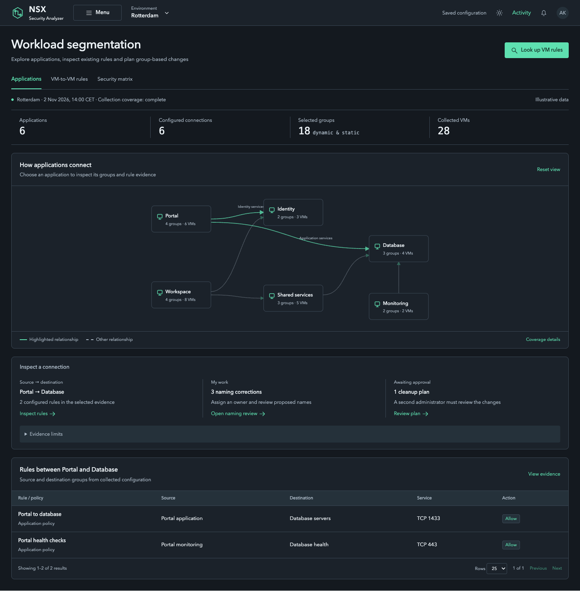
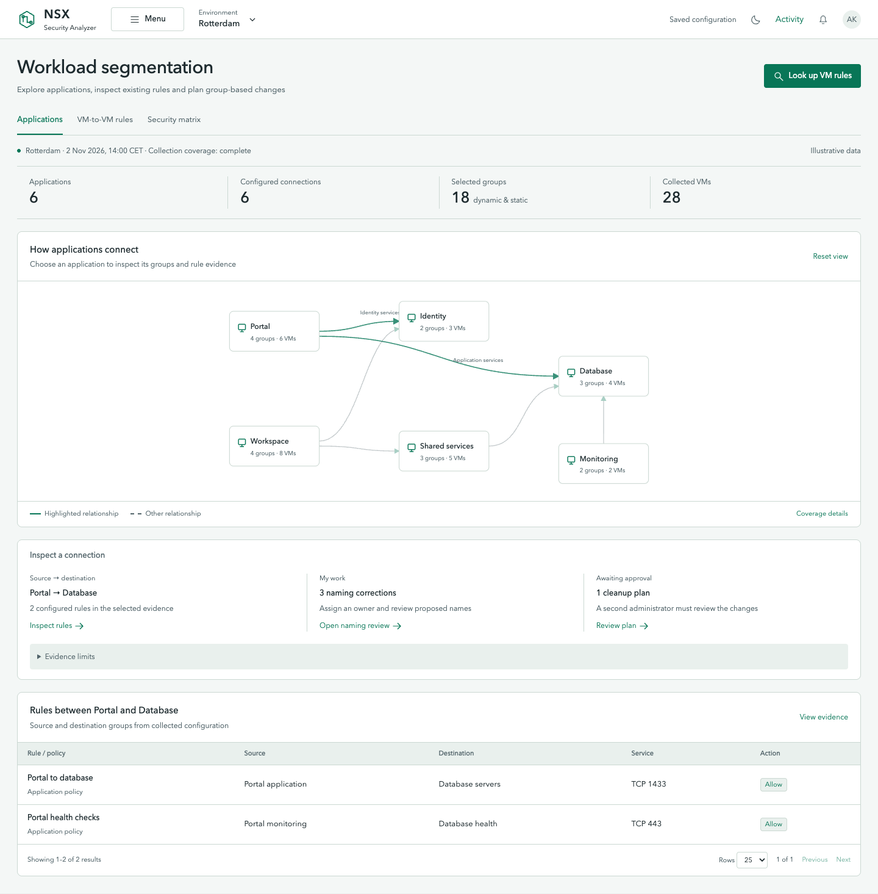
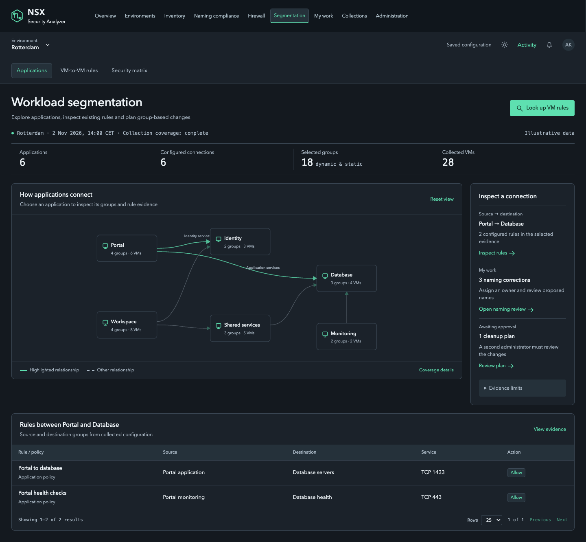
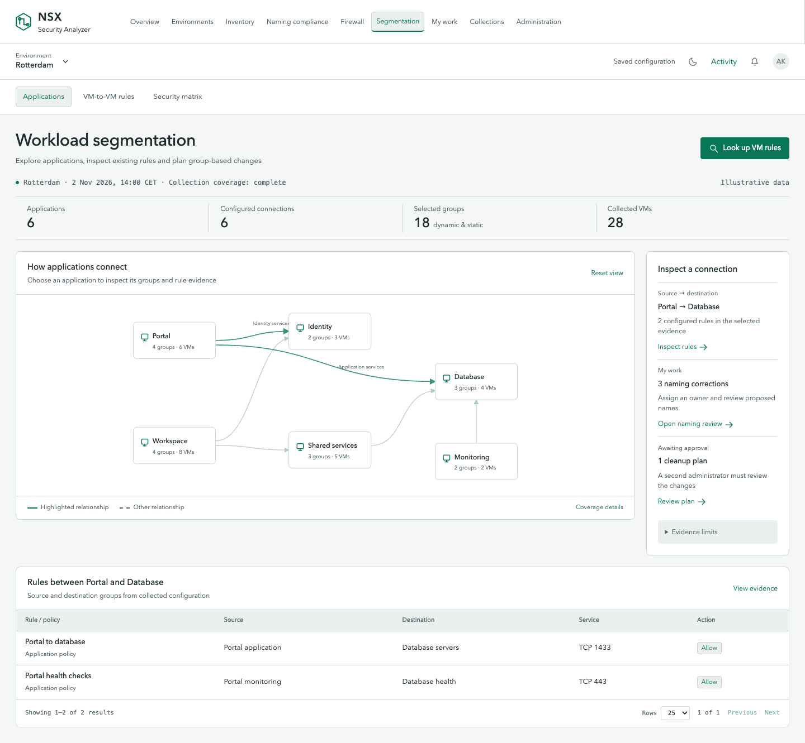
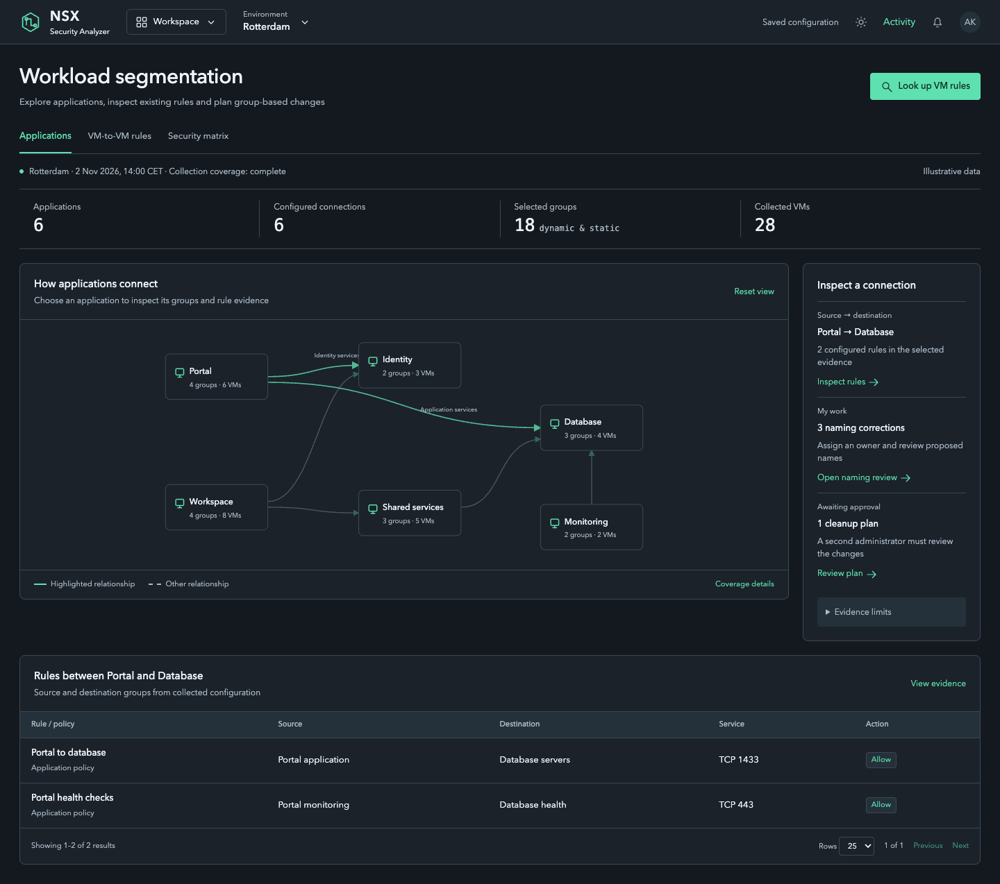
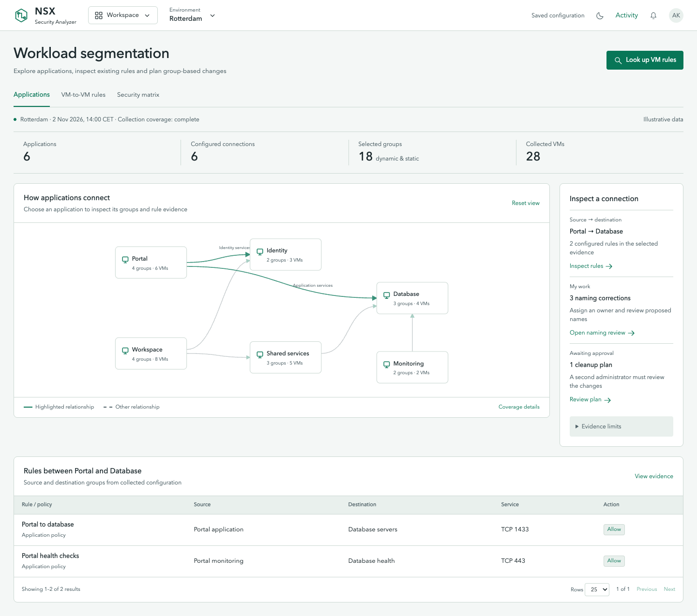
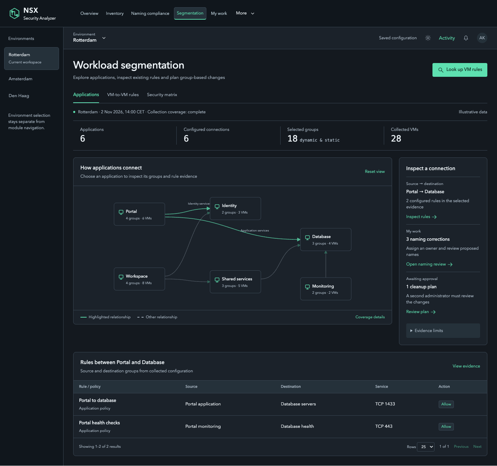
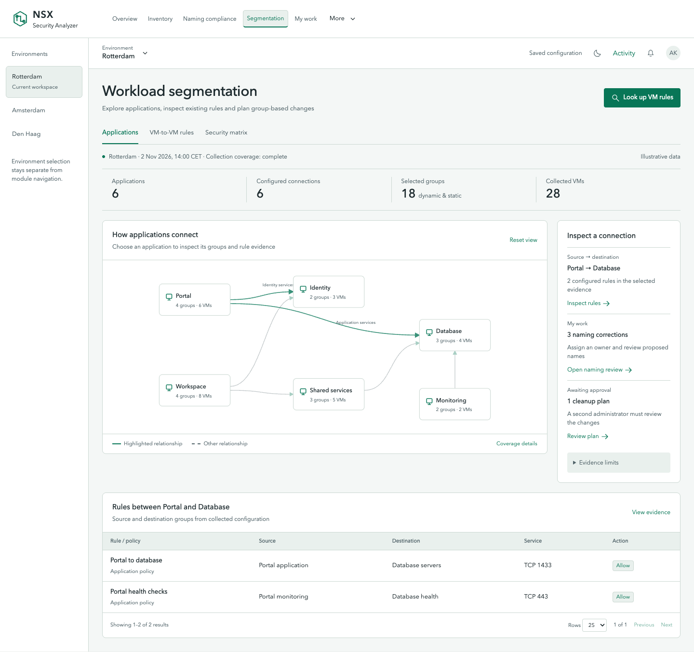
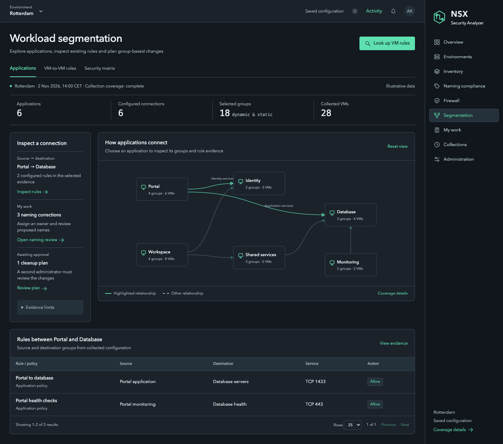
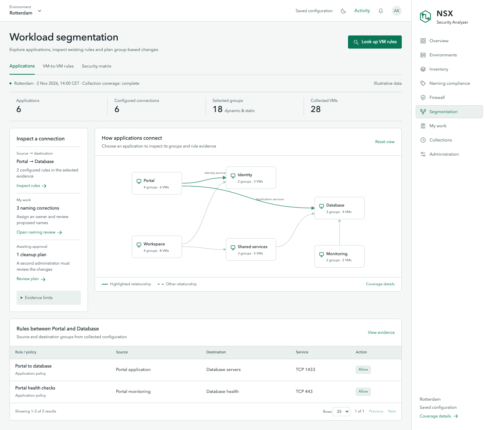

11. Focus drawer
The main menu opens only when requested.

Dark mode · Same menu, same evidence
Light mode · Same menu, same evidenceRelay identity · Five menu alternatives, each in dark and light mode · Interactive chooser · Compare any two
The main menu opens only when requested.

Dark mode · Same menu, same evidence
Light mode · Same menu, same evidenceGlobal modules sit above a separate local task strip.

Dark mode · Same menu, same evidence
Light mode · Same menu, same evidenceA header launcher opens a grid of named modules.

Dark mode · Same menu, same evidence
Light mode · Same menu, same evidenceAn environment list sits left; modules remain in the header.

Dark mode · Same menu, same evidence
Light mode · Same menu, same evidenceA labeled navigation panel sits at the right edge.

Dark mode · Same menu, same evidence
Light mode · Same menu, same evidence